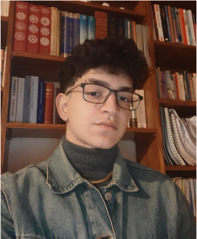

ESTUDIANTE DE DESARROLLO DE SOFTWARE
Estudios
-
Colegio San Ignacio
2005 – 2021 Escuela primaria y secundaria con orientación en Ciencias Económicas Emilio Mitre 277, Ezeiza, Provincia de Buenos Aires 011 4232-0547
-
Tecnicatura en Desarrollo de Software
2022 – 2023 Alfonsina Storni 41, B1802 Ezeiza, Provincia de Buenos Aires. 011 4480-0428
-
Tecnicatura en Desarrollo de Software
2023 – EN CURSO Lima 757, C1073, CABA. 011 4480-0428